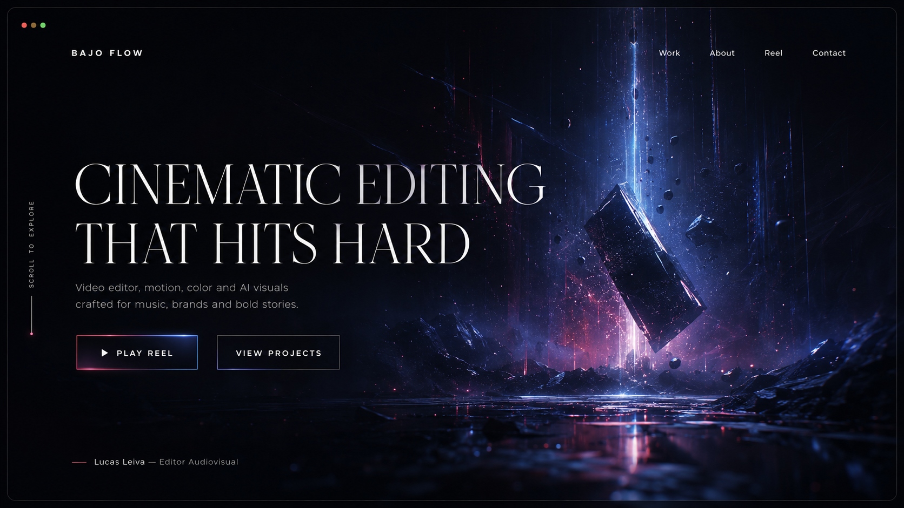
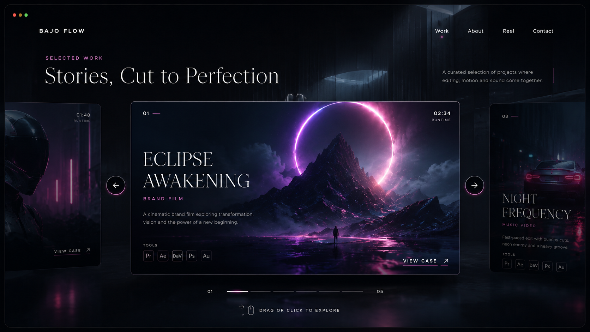

02
Lucas Leiva / Editor audiovisual
Edicion dinamica, color cinematografico, audio cuidado y piezas listas para romper el algoritmo en YouTube, redes y marcas.
Selected work
Una galeria 3D para mostrar tus piezas como si fueran escenas de una pelicula: tarjeta central al frente, proyectos laterales hacia atras y atmosfera de sala oscura.

Formato vertical / horizontalContenido principal
Proyecto base para un video principal: narrativa, ritmo, retencion, color y entrega lista para publicar.
Craft sequence
Esta no es una lista de servicios: es el recorrido visual de como una idea se transforma en una pieza con ritmo, color, sonido y presencia.
Recibo archivos, referencias, musica, objetivo y tono de la pieza.
Estructura, retencion, pausas, impacto y cortes con intencion.
Contraste, profundidad, look cinematografico y coherencia visual.
Limpieza, mezcla, ambiente, golpe sonoro y pulso emocional.
Graficas, visuales, detalles generativos y capas de energia visual.
Version final optimizada para YouTube, redes, marcas o institucionales.

About Lucas
Soy Lucas, editor de video enfocado en transformar piezas audiovisuales en experiencias de alto impacto. Trabajo cada proyecto desde el ritmo, la atmosfera y la emocion para que cada corte tenga una razon.
Bajo Flow nace para crear contenido con identidad: videos para YouTube, redes sociales, marcas e institucionales que necesitan verse profesionales, modernos y memorables.
Contact
Si queres que tu contenido tenga ritmo, imagen, sonido y presencia, escribime por la red que uses y vemos como lo llevamos a pantalla.